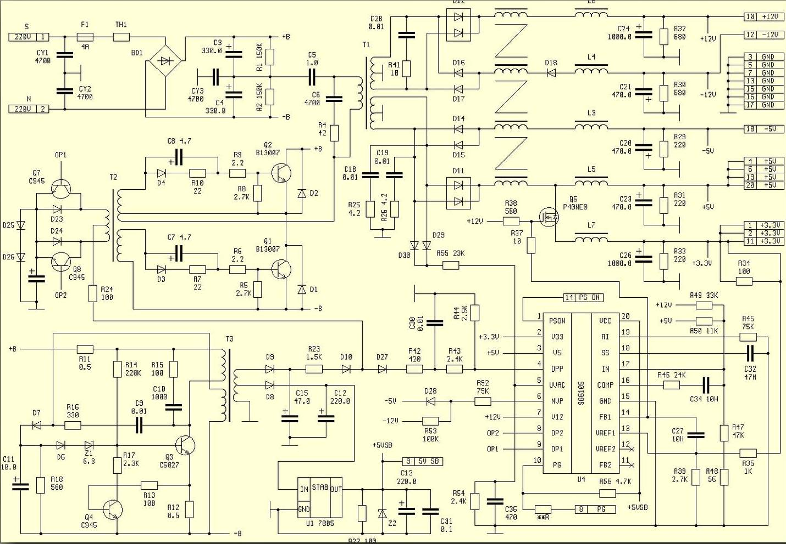
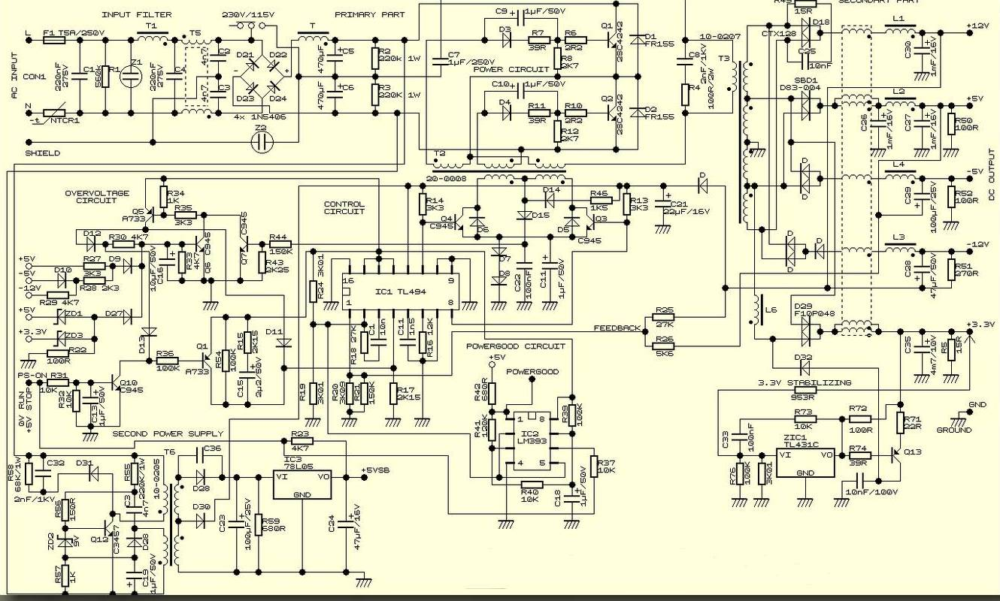

Схемы блока питания ATX
С каждым днём всё более популярны среди радиолюбителей компьютерные блоки питания ATX. При относительно небольшой цене, они представляют собой мощный, компактный источник напряжения 5 и 12 В 250–500 Вт. БП ATX можно использовать и в зарядных устройствах для автомобильных аккумуляторов, и в лабораторных блоках питания, и в сварочных инверторах, и ещё массу применений можно найти для них при определённой фантазии. Причём если схема БП ATX и подвергается переделке, то минимальной.
Схемотехника этих блоков питания примерно одинакова практически у всех производителей. Небольшое отличие касается лишь БП AT и ATX. Главное различие между ними заключается в том, что БП в AT не поддерживает программно стандарт расширенного управления питанием. Отключить данный БП можно, лишь прекратив подачу напряжение на его вход, а в блоках питания формата ATX есть возможность программного отключения сигналом управления с материнской платы. Как правило плата ATX имеет большие размеры чем AT и вытянута по вертикали.

Рис. 1 - Схема блока питания ATX
В любом компьютерном БП, напряжение +12 В предназначено для питания двигателей дисковых накопителей. Источник питания по этой цепи должен обеспечивать большой выходной ток, особенно в компьютерах с множеством отсеков для дисководов. Это напряжение также подается на вентиляторы. Они потребляют ток до 0,3 А, но в новых компьютерах это значение ниже 0,1 А. Питание +5 В подаётся на все узлы компьютера, поэтому имеет очень большую мощность и ток, до 20 А, а напряжение +3,3 В предназначено исключительно для запитки процессора. Зная что современные многоядерные процессоры имеют мощность до 150 Вт, нетрудно подсчитать ток этой цепи: 100 Вт/3,3 В=30 А! Отрицательные напряжения -5 и -12 В раз в десять слабее основных плюсовых, поэтому там стоят простые 2-х амперные диоды без радиаторов.
В задачи БП входит и приостановка функционирования системы до тех пор, пока величина входного напряжения не достигнет значения, достаточного для нормальной работы. В каждом блоке питания перед получением разрешения на запуск системы выполняется внутренняя проверка и тестирование выходного напряжения. После этого на системную плату посылается специальный сигнал Power Good. Если этот сигнал не поступил, компьютер работать не будет.

Рис. 2 - Схема блока питания ATX
Сигнал Power Good можно использовать для сброса вручную если подать его на микросхему тактового генератора. При заземлении сигнальной цепи Power Good, генерация тактовых сигналов прекращается и процессор останавливается. После размыкания переключателя вырабатывается кратковременный сигнал начальной установки процессора и разрешается нормальное прохождение сигнала - выполняется аппаратная перезагрузка компьютера. В компьютерных БП типа ATX, предусмотрен сигнал, называемый PS ON, он может использоваться программой для отключения источника питания.
Для проверки работоспособности блока питания, следует нагрузить БП лампами для автомобильных фар и замерять все выходные напряжения тестером. Если напряжения в пределах нормы. Также стоит проверить изменение выдаваемое БП напряжение с изменением нагрузки.
Работа этих блоков питания очень стабильна и надёжна, но в случае сгорания, чаще всего выходят из строя мощные транзисторы, низкоомные резисторы, выпрямительные диоды на радиаторе, варисторы, трансформатор и предохранитель.
Источники:
Скачать сборник схем компьютерных блоков питания
Очень полезная книга по описанию, видам и принципу действия БП AT и ATX